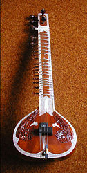
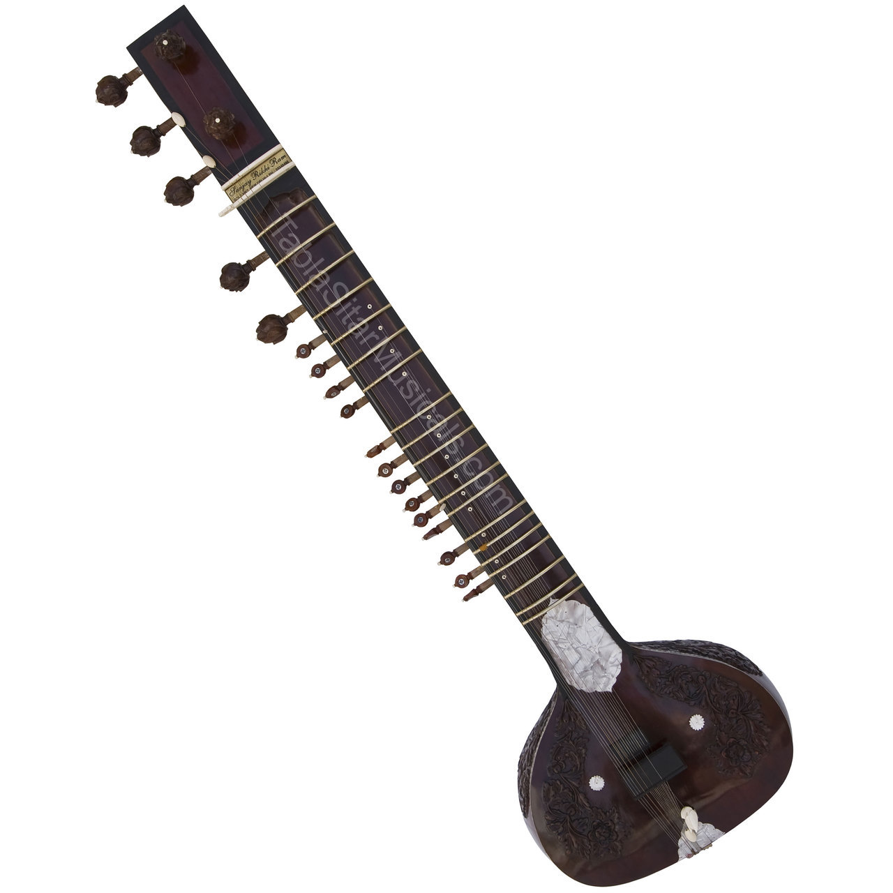
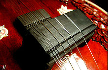

The sitar is a plucked stringed instrument used mainly in Hindustani music
and Indian classical music. The instrument is believed to have been derived from
the veena, an ancient Indian instrument, which was modified by a Mughal court
musician to conform with the tastes of his Mughal patrons and named after a
Persian instrument called the setar (meaning three strings). The sitar
flourished in the 16th and 17th centuries and arrived at its present form in
18th century India. It derives its distinctive timbre and resonance from
sympathetic strings, bridge design, a long hollow neck and a gourd-shaped
resonance chamber. In appearance, the sitar is similar to the tanpura, except
that it has frets.
Used widely throughout the Indian subcontinent, the sitar became popularly known
in the wider world through the works of Ravi Shankar, beginning in the late
1950s and early 1960s. In the 1960s, a short-lived trend arose for the use of
the sitar in Western popular music, with the instrument appearing on tracks by
bands such as The Beatles, The Doors, The Rolling Stones and others.

Etymology and history:
The Hindi and Urdu word sitar originally comes from Persian seh + tar, literally
meaning "three strings."[2] Another etymology is that it may be derived from
Sanskrit words saptatantri veena (Sanskrit - seven stringed veena), which later
was called as sattar (Hindi -seven strings) and then eventually became
sitar.[citation needed] The instrument is thought to have been a version of the
Veena, another prominent instrument in Carnatic and Hindustani music, altered in
order to conform with Mughal tastes. The sitar flourished in the 16th and 17th
centuries and arrived at its present form in 18th century India, gaining
prominence in the royal court of the Mughal Empire based in Northern India.
In his Bharatiya Sangeet Vadya, Lalmani Misra traces the instrument's
development from the Tritantri veena through the nibaddh and anibaddh
Tamburasalso called tanbur and later the jantra. Construction of the similar
tanpura was described by Tansen.
General layout:

A sitar can have 18, 19, 20, or 21 strings. Six or seven of these are played
strings which run over curved, raised frets, and the remainder are sympathetic
strings (tarb, also known as taarif or tarafdaar) which run underneath the frets
and resonate in sympathy with the played strings. The frets are movable,
allowing fine tuning. The played strings run to tuning pegs on or near the head
of the instrument, while the sympathetic strings, which are a variety of
different lengths, pass through small holes in the fretboard to engage with the
smaller tuning pegs that run down the instrument's neck.
The Gandhaar-pancham sitar (used by Vilayat Khan and his disciples) has six
playable strings, whereas the Kharaj-pancham sitar, used in the Maihar gharana,
to which Ravi Shankar belonged, and other gharanas such as Bishnupur, has seven.
Three of these (or four on a Ghandar-pancham sitar or "Vilayat Khan"-style aka
Etawa gharana), called the chikaari, simply provide a drone; the rest are used
to play the melody, though the first string (baajtaar) is most used.
The instrument has two bridges: the large bridge (badaa goraa) for the playing
and drone strings and the small bridge (chota goraa) for the sympathetic
strings. Its timbre results from the way the strings interact with the wide,
sloping bridge. As a string reverberates its length changes slightly as its edge
touches the bridge, promoting the creation of overtones and giving the sound its
distinctive tone. The maintenance of this specific tone by shaping the bridge is
called jawari. Many musicians rely on instrument makers to adjust this.
The bridges are fixed to the main resonating chamber, or kaddu, at the base of
the instrument. Some sitars have a secondary resonator, the tumbaa, near the top
of the hollow neck.
Materials used in construction include teak wood or tun wood (Cedrela toona),
which is a variation of mahogany, for the neck and faceplate (tabli), and gourds
for the resonating chambers. The instrument's bridges are made of deer horn,
ebony, or very occasionally from camel bone. Synthetic material is now common as
well.
Construction styles:
There are three popular modern styles of sitar offered in a variety of
sub-styles and decorative patterns. The two popular styles are the "gayaki
style" sitars (sometimes called "Vilayat Khan style sitars") and the full
decorated "instrumental style" sitars (sometimes called "Ravi Shankar style
sitars").
The gayaki style sitar is mostly of seasoned toon wood, with very few
or no carved decorations.
It often has a dark polish. The inlay decorations are
mostly of mother of pearl. The number of sympathetic strings is often limited to
eleven but may extend to thirteen. Jawari (bridge) grinding styles are also
different, as is the thickness of the "tabli" (soundboard).
The other type of sitar, the instrumental style, is most often made of seasoned
toon wood, but sometimes made of (Burma) teak. It is often fitted with a second
resonator, a small tumba (pumpkin or pumpkin-like wood replica) on the neck.
This style is usually fully decorated, with floral or grape carvings and
celluloid inlays with colored (often brown or red) and black floral or arabesque
patterns. It typically has thirteen sympathetic strings.
It is said that the
best Burma teak sitars are made from teak that has been seasoned for
generations. Therefore, instrument builders look for old Burma teak that was
used in old colonial-style villas as whole trunk columns for their special sitar
constructions. The sources of very old seasoned wood are a highly guarded trade
secret and sometimes a mystery.
There are various additional sub styles and cross mixes of styles in sitars,
according to customer preferences. Most importantly, there are some differences
in preferences for the positioning of sympathetic (taraf) string pegs (see
photo).
Amongst all sitar styles there are student styles, beginner models, semi-pro
styles, pro-models, master models, and so on. Prices are often determined by the
manufacturer's name and not by looks alone or materials used. Some sitars by
certain manufacturers fetch very high collectible prices. Most notable are older
Rikhi Ram (Delhi) and older Hiren Roy (Kolkata) sitars depending upon which
master built the instrument.
Though not technically a sitar, the electric sitar is a guitar with a special
bridge, known as the "buzz bridge", and sympathetic strings, to mimic the sitar.
It has 6 strings, and lacks movable frets.
Tuning:
Tuning depends on the sitarist's school or style, tradition and each artist's personal preference. The main playing string is almost invariably tuned a perfect fourth above the tonic, the second string being tuned to the tonic. The tonic in the Indian solfège system is referred to as ṣaḍja, ṣaḍaj, or the shortened form sa, or khaṛaj, a dialectal variant of ṣaḍaj, not as vād, and the perfect fifth to which one or more of the drones strings are tuned is referred to as pañcam, not samvād.
The sympathetic strings are tuned to the notes of the being played: although there is slight stylistic variance as to the order of these, typically they are tuned:

In one or more of the more common tunings (used by Ravi Shankar, among
others, called "Kharaj Pancham" sitar) the playable strings are strung in this
fashion:
Chikari strings: Sa (high), Sa (middle), and Pa.
Kharaj (bass) strings: Sa (low) and Pa (low).
Jod and baaj strings, Sa and Ma.
In a "Gandhar Pancham" (Imdadkhani, school of Vilayat Khan) sitar, the bass or
kharaj strings are removed and are replaced by a fourth chikari which is tuned
to Ga. By playing the chikari strings with this tuning, one produces a chord
(Sa, Sa, Pa, Ga or Sa Sa Ma Ga or Sa, Sa, Dha, Gha depending on the raga).
To tune the sympathetic strings to raga Kafi for example: I Sa, vii ni (lower
case denotes flat (komal) I Sa, II Re, iii ga, III Ga (Shuddh or natural, in
Kafi the third is different ascending and descending), iv ma, V Pa, VI Dha, vii
ni, I Sa, II Re, iii ga.
There is a lot of stylistic variance within these tunings and like most Indian
stringed instruments, there is no default tuning. Mostly, tunings vary by
schools of teaching (gharana) and the piece that is meant to be played
Playing:
The instrument is balanced between the player's left foot and right knee. The
hands move freely without having to carry any of the instrument's weight.The
player plucks the string using a metallic pick or plectrum called a mizraab. The
thumb stays anchored on the top of the fretboard just above the main gourd.
Generally only the index and middle fingers are used for fingering although a
few players occasionally use the third. A specialized technique called "meend"
involves pulling the main melody string down over the bottom portion of the
sitar's curved frets, with which the sitarist can achieve a seven semitone range
of microtonal notes (however, because of the sitar's movable frets, sometimes a
fret may be set to a microtone already, and no bending would be required).
Adept
players bring in charisma through use of special techniques like Kan, Krintan,
Murki, Zamzama etc. They also use special Mizrab Bol-s, as in Misrabani and
create Chhand-s even in odd-numbered Tal-s like Jhoomra.